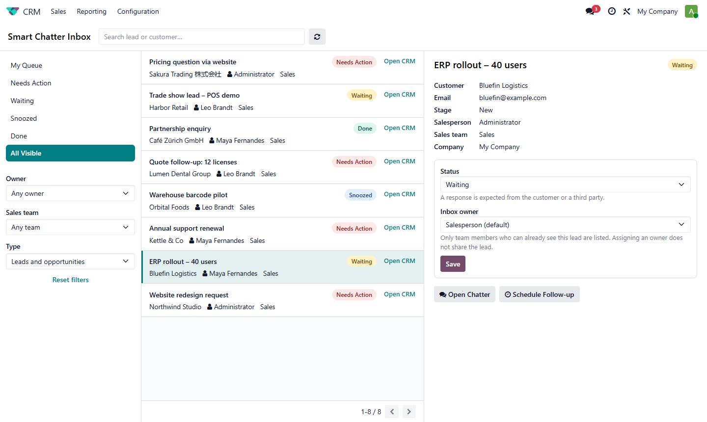
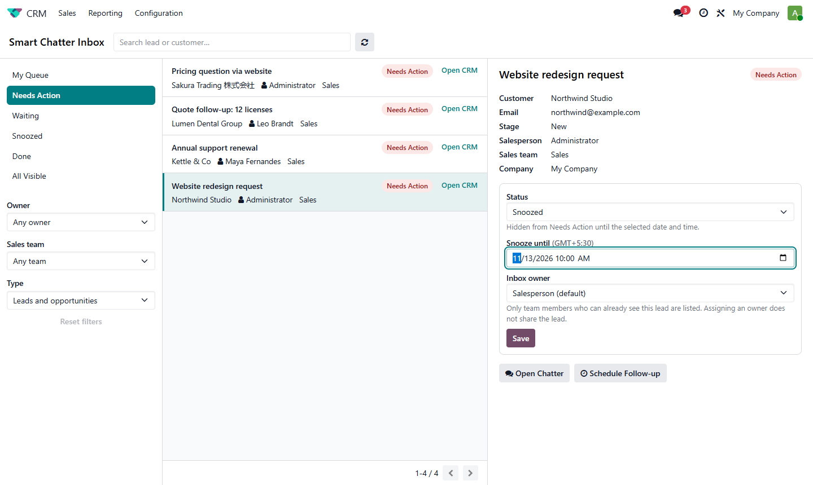
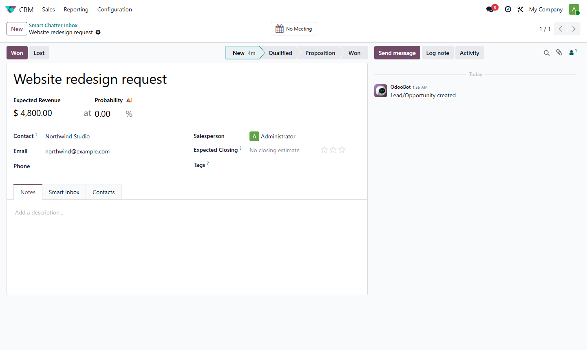
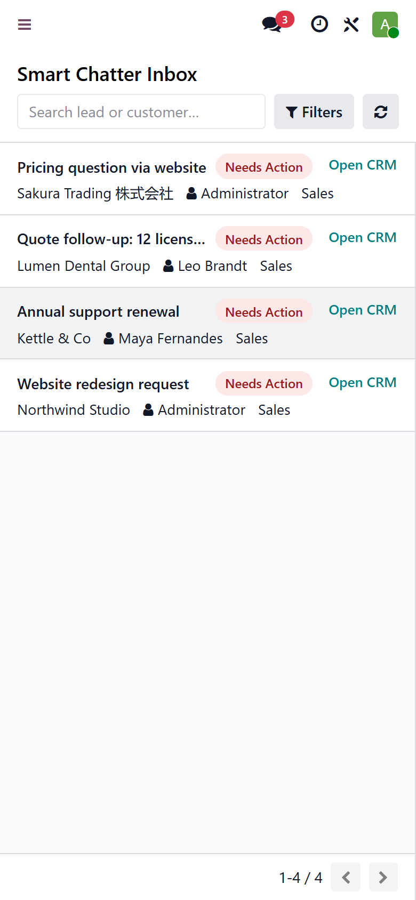

Your sales team gets one queue of leads and opportunities that need a reply. Each one has a status (Needs Action, Waiting, Done or Snoozed) and a follow-up owner. Replies still happen in Odoo's own chatter, so nothing about your email setup changes.
Only $19, one-time purchase

Follow-up statusesNeeds Action, Waiting, Done and Snoozed, with quick filters including My Queue and All Visible. |
Clear ownershipGive each lead a follow-up owner. The salesperson stays the same, and the lead is never shared with anyone new. |
SnoozeHide a lead until a date and time. It comes back to Needs Action by itself, with no scheduled job to manage. |
Native chatter and activitiesOpen Chatter opens the lead. Schedule Follow-up opens Odoo's own activity dialog. |
Search and filtersSearch by lead title or customer. Filter by owner, sales team, company and lead or opportunity. |
Respects your access rulesUsers only see leads they can already open. Multi-company rules and Odoo's record rules apply everywhere. |



Questions or need help installing? Email rahul@softdeviser.com. We usually answer within one business day.